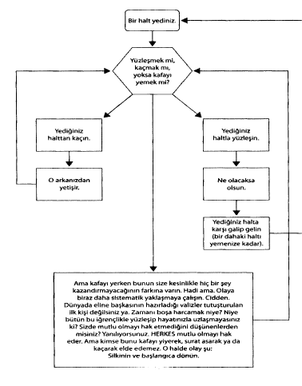

KEN DIETZ’IN YEDİĞİNİZ HALTLA YÜZLEŞME ÜZERİNE AKIŞ DİYAGRAMI

Ama kafayı yerken bunun size kesinlikle hiç bir şey kazandırmayacağının farkına varın. Hadi ama. Olaya biraz daha sistematik yaklaşmaya çalışın. Cidden. Dünyada eline başkasının hazırladığı valizler tutuşturulan ilk kişi değilsiniz ya. Zamanı boşa harcamak niye? Niye bütün bu iğrençlikle yüzleşip hayatınızla uzlaşmayasınız ki? Sizde mutlu olmayı hak etmediğini düşünenlerden misiniz? Yanılıyorsunuz. HERKES mutlu olmayı hak eder. Ama kimse bunu kafayı yiyerek, surat asarak ya da kaçarak elde edemez. O halde olay şu: Silkinin ve başlangıca dönün.